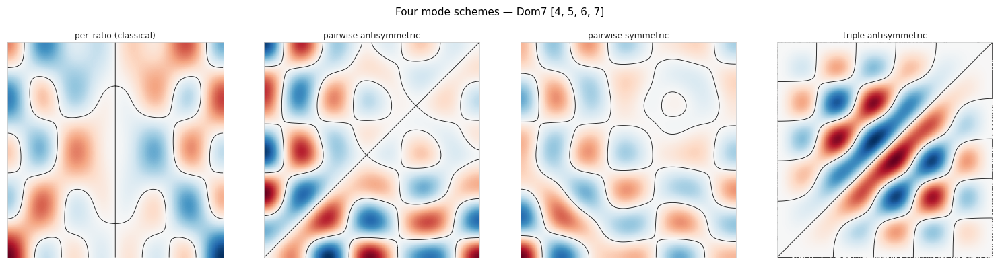
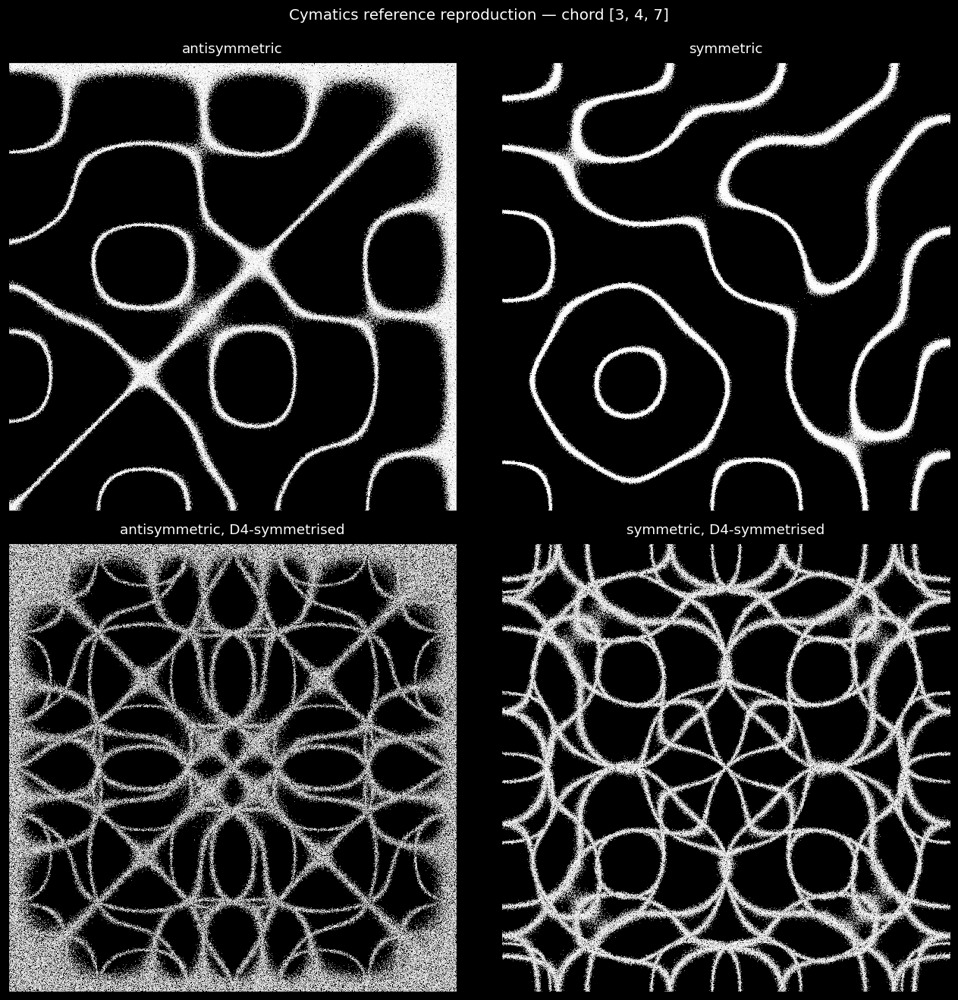
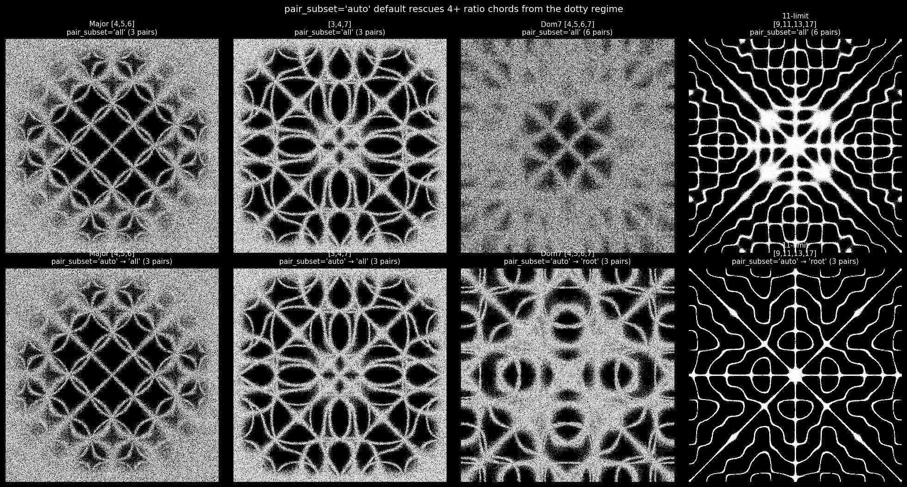
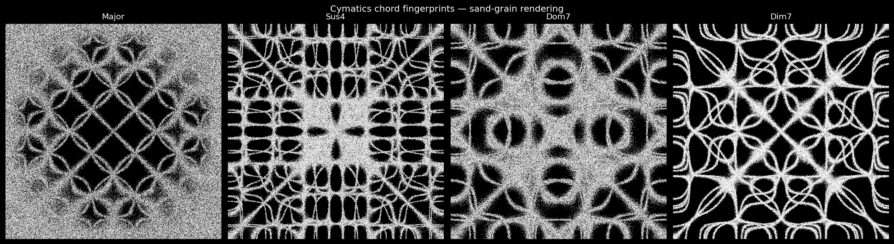
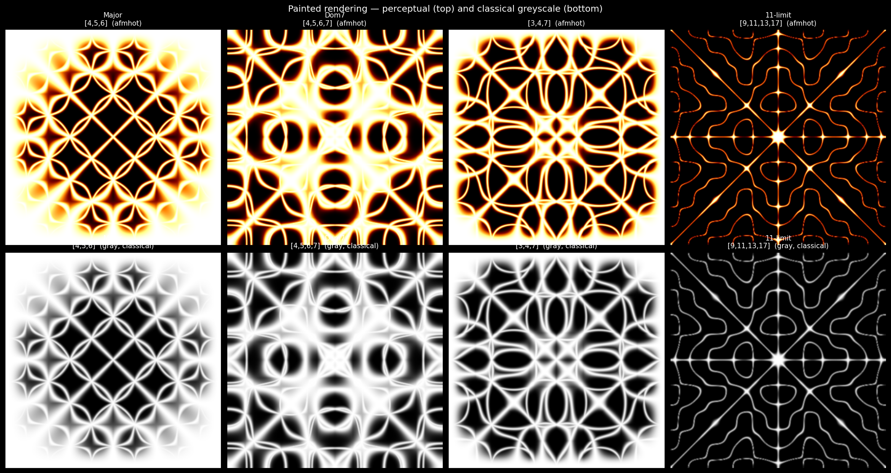
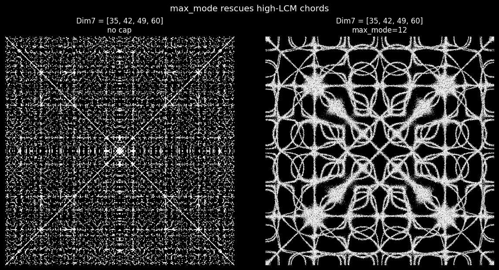
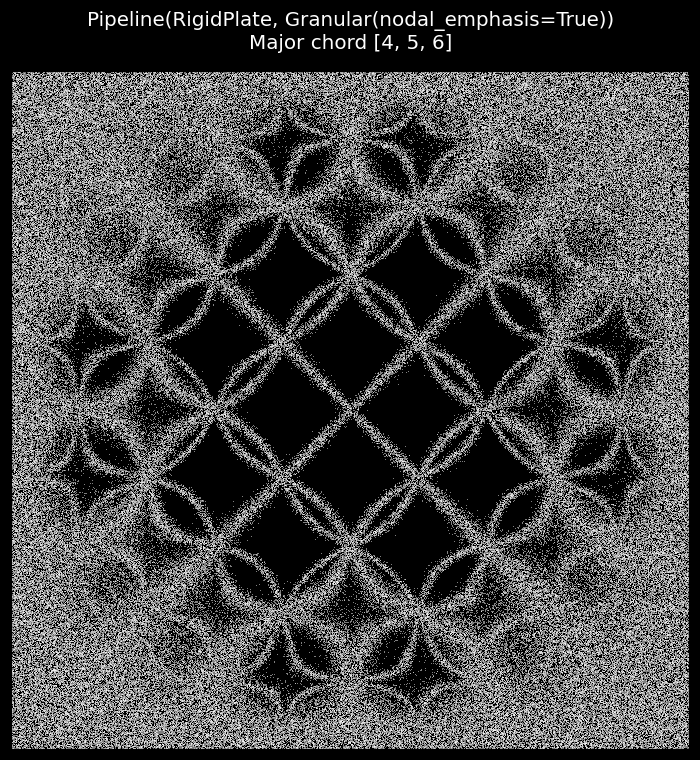

Chladni cymatics — chord-driven nodal patterns#
The Chladni sand-on-square-plate experiment is the canonical visual representation of musical chord ratios. Sand grains settle on the nodal lines of a vibrating plate — the curves where the plate’s displacement is zero. Different chord ratios excite different combinations of plate eigenmodes and the resulting nodal lattice becomes a unique “fingerprint” for each chord.
RigidPlate (the eigenmode-family medium in
:mod:biotuner.harmonic_geometry.media) exposes two parallel paths:
classical (default) —
mode_scheme='per_ratio': each ratio maps to one(m, n)mode pair via Stern-Brocot, and the field is a sum of symmetriccos·cosproducts. Works on rectangular, circular, polygonal, and 3-D-box plates.cymatics (new) —
mode_scheme='pairwise_antisymmetric': each pair of ratios contributes one antisymmetric modecos(m)cos(n) - cos(n)cos(m)on a square plate. This is the iconic Chladni form. Rectangular only.
This notebook walks through the cymatics path: integer-ratio
extraction, the four mode-scheme options, D4 symmetrisation, the
nodal-density transform, two rendering styles (white-sand particles
and a perceptual-cmap “painted” view), the max_mode cap that tames
chords with high LCMs, and finally an animation that morphs through a
sequence of chords.
import warnings
from fractions import Fraction
import numpy as np
import matplotlib.pyplot as plt
from biotuner.harmonic_geometry import HarmonicInput, plotting
from biotuner.harmonic_geometry.media import (
Granular, Pipeline, RigidPlate,
)
from biotuner.harmonic_geometry.media.eigenmode.rigid_plate import (
chord_to_int_modes,
chladni_field_pairwise,
chladni_field_triple_antisymmetric,
chladni_nodal_density,
)
warnings.filterwarnings("ignore")
plt.rcParams["figure.dpi"] = 110
# Small-integer just-intoned chord representations — the natural form
# for the cymatics schemes (one chord ratio = one plate wavenumber).
CHORDS_INT = {
"Major": [4, 5, 6],
"Sus4": [6, 8, 9],
"Dom7": [4, 5, 6, 7],
"Dim7": [5, 6, 7, 9],
}
1. Lossless integer-ratio extraction#
chord_to_int_modes multiplies a chord’s Fraction ratios through
by the LCM of their denominators. No rounding. Just-intoned chords
already in small-integer form round-trip unchanged; 12-TET-flavoured
forms can produce surprisingly large integers.
chords_frac = {
"Major": [Fraction(1), Fraction(5, 4), Fraction(3, 2)],
"Dom7": [Fraction(1), Fraction(5, 4), Fraction(3, 2), Fraction(7, 4)],
"Dim7-just": [Fraction(1), Fraction(6, 5), Fraction(7, 5), Fraction(9, 5)],
"Dim7-12TET": [Fraction(1), Fraction(6, 5), Fraction(7, 5), Fraction(12, 7)],
}
for name, c in chords_frac.items():
print(f" {name:12s} {[str(r) for r in c]} → {chord_to_int_modes(c)}")
2. The four mode schemes#
RigidPlate exposes four chord→mode schemes. The classical
per_ratio lives next to three cymatics-style schemes that sum
modes over pairs or triples of ratios — emphasising the
harmonic relationships in the chord rather than the individual
partials.
dom7_int = CHORDS_INT["Dom7"]
dom7_hi = HarmonicInput(ratios=[Fraction(r, 4) for r in dom7_int])
g_pr = RigidPlate(mode_scheme="per_ratio", resolution=400)(dom7_hi)
g_pa = chladni_field_pairwise(dom7_int, antisymmetric=True, resolution=400)
g_ps = chladni_field_pairwise(dom7_int, antisymmetric=False, resolution=400)
g_tr = chladni_field_triple_antisymmetric(dom7_int, resolution=400)
plotting.gallery(
[g_pr, g_pa, g_ps, g_tr], n_cols=4,
titles=["per_ratio (classical)",
"pairwise antisymmetric",
"pairwise symmetric",
"triple antisymmetric"],
suptitle="Four mode schemes — Dom7 [4, 5, 6, 7]",
fig_width=14.0,
);

3. D4 symmetrisation — applied at the density stage#
The classical Chladni demos apply D4 (4-fold rotational + reflective)
symmetrisation to the density exp(-w²/σ²), taking the
element-wise max over the 8-element orbit. This unions the nodal
sets across rotations — producing the rich crystalline lattice the
cymatics aesthetic is known for. RigidPlate(symmetry='d4_max')
records the request; chladni_nodal_density (and the
Granular(nodal_emphasis=True) path) then applies it at the
density stage.
chord = [3, 4, 7] # the user's original cymatics-demo chord
fig, axes = plt.subplots(2, 2, figsize=(12, 12), facecolor="black")
configs = [
("antisymmetric", True, "none"),
("symmetric", False, "none"),
("antisymmetric, D4-symmetrised", True, "d4_max"),
("symmetric, D4-symmetrised", False, "d4_max"),
]
for ax, (label, asy, sym) in zip(axes.flat, configs):
field = chladni_field_pairwise(
chord, antisymmetric=asy, symmetry=sym,
resolution=400, pair_subset="all",
)
plotting.draw_chladni_sand(field, ax, n_particles=300_000,
point_size=0.4, point_alpha=0.4,
sigma=0.05)
ax.set_title(label, color="white", fontsize=12, pad=8)
fig.suptitle(f"Cymatics reference reproduction — chord {chord}",
color="white", fontsize=13, y=0.995)
fig.tight_layout();

4. pair_subset — keeping curves bold at any chord size#
Summing all C(n, 2) pair-modes produces continuous curves for
3-ratio chords (the simultaneous zero-set is a curve) but degenerates
into a set of isolated points for 4+ ratio chords (the
simultaneous zero-set becomes restrictive). The pair_subset
parameter exposes the workaround: keep only n-1 pairs and the
field stays curve-like at any chord size.
pair_subset='auto'(default):'all'forn ≤ 3,'root'forn ≥ 4.'all': literal mathematical sum (dotty forn ≥ 4).'adjacent': consecutive pairs.'root': pairs that include the first ratio.list of
(m, n)tuples: full manual control.
fig, axes = plt.subplots(2, 4, figsize=(18, 9.5), facecolor="black")
chords = [
("Major [4,5,6]", [4, 5, 6]),
("[3,4,7]", [3, 4, 7]),
("Dom7 [4,5,6,7]", [4, 5, 6, 7]),
("11-limit\n[9,11,13,17]", [9, 11, 13, 17]),
]
for ax, (name, chord) in zip(axes[0], chords):
f = chladni_field_pairwise(
chord, antisymmetric=True, symmetry="d4_max",
resolution=400, pair_subset="all",
)
plotting.draw_chladni_sand(f, ax, n_particles=300_000,
point_size=0.4, point_alpha=0.4)
n = f.parameters["n_pairs"]
ax.set_title(f"{name}\npair_subset='all' ({n} pairs)",
color="white", fontsize=10)
for ax, (name, chord) in zip(axes[1], chords):
f = chladni_field_pairwise(
chord, antisymmetric=True, symmetry="d4_max",
resolution=400, # pair_subset='auto'
)
plotting.draw_chladni_sand(f, ax, n_particles=300_000,
point_size=0.4, point_alpha=0.4)
actual = f.parameters["pair_subset"]
n = f.parameters["n_pairs"]
ax.set_title(f"{name}\npair_subset='auto' → '{actual}' ({n} pairs)",
color="white", fontsize=10)
fig.suptitle("pair_subset='auto' default rescues 4+ ratio chords from the dotty regime",
color="white", fontsize=13, y=0.995)
fig.tight_layout(pad=0.6);

5. Chord-fingerprint gallery — sand-grain rendering#
plotting.draw_chladni_sand density-samples n_particles points
from the nodal density and renders them as a black-plate / white-grain
scatter — the photographic Chladni look. Auto-σ from the chord
metadata.
fig, axes = plt.subplots(1, 4, figsize=(18, 4.7), facecolor="black")
for ax, (name, chord) in zip(axes, CHORDS_INT.items()):
field = chladni_field_pairwise(
chord, antisymmetric=True, symmetry="d4_max",
resolution=400,
)
plotting.draw_chladni_sand(field, ax, n_particles=300_000,
point_size=0.4, point_alpha=0.4)
ax.set_title(name, color="white", fontsize=12)
fig.suptitle("Cymatics chord fingerprints — sand-grain rendering",
color="white", fontsize=13, y=1.02)
fig.tight_layout(pad=0.4);

6. Painted rendering — perceptual cmap alternative#
plotting.draw_chladni_painted renders the same density via
imshow on a perceptual luminance ramp (afmhot by default), or
greyscale for the classical look. Faster than the particle sampler
and well suited to high-wavenumber chords where individual grains get
lost.
fig, axes = plt.subplots(2, 4, figsize=(18, 9.5), facecolor="black")
chords_gamut = [
("Major\n[4,5,6]", [4, 5, 6]),
("Dom7\n[4,5,6,7]", [4, 5, 6, 7]),
("[3,4,7]", [3, 4, 7]),
("11-limit\n[9,11,13,17]", [9, 11, 13, 17]),
]
for ax, (name, chord) in zip(axes[0], chords_gamut):
f = chladni_field_pairwise(
chord, antisymmetric=True, symmetry="d4_max", resolution=400,
)
plotting.draw_chladni_painted(f, ax, cmap="afmhot", gamma=0.85)
ax.set_title(f"{name} (afmhot)", color="white", fontsize=10)
for ax, (name, chord) in zip(axes[1], chords_gamut):
f = chladni_field_pairwise(
chord, antisymmetric=True, symmetry="d4_max", resolution=400,
)
plotting.draw_chladni_painted(f, ax, cmap="gray", gamma=0.55)
ax.set_title(f"{name} (gray, classical)", color="white", fontsize=10)
fig.suptitle("Painted rendering — perceptual (top) and classical greyscale (bottom)",
color="white", fontsize=13, y=0.995)
fig.tight_layout(pad=0.6);

7. max_mode — taming high-LCM chords#
Chords whose Fraction form has a large LCM (e.g. 12-TET-flavoured
Dim7 = [35, 42, 49, 60]) produce sub-pixel-fine lattices that
read as dots rather than curves. max_mode scales all wavenumbers
proportionally down to a visible range — ratios are preserved.
dim7_blown = [35, 42, 49, 60]
fig, axes = plt.subplots(1, 2, figsize=(11, 5.6), facecolor="black")
for ax, cap in zip(axes, [None, 12]):
f = chladni_field_pairwise(
dim7_blown, antisymmetric=True, symmetry="d4_max",
resolution=480, max_mode=cap,
)
plotting.draw_chladni_sand(f, ax, n_particles=300_000,
point_size=0.4, point_alpha=0.4)
title = "no cap" if cap is None else f"max_mode={cap}"
ax.set_title(f"Dim7 = {dim7_blown}\n{title}",
color="white", fontsize=11)
fig.suptitle("max_mode rescues high-LCM chords",
color="white", fontsize=13, y=1.0)
fig.tight_layout();

8. Pipeline composition: RigidPlate → Granular#
The Granular transport medium picks up a wave field and samples a
density-weighted point cloud. With nodal_emphasis=True it uses
exp(-w²/σ²) directly on the input field (auto-σ from metadata)
and applies any D4 symmetrisation from the upstream
RigidPlate.symmetry setting. So the entire cymatics flow becomes
a clean Pipeline:
pipeline = Pipeline(
RigidPlate(mode_scheme="pairwise_antisymmetric",
symmetry="d4_max", resolution=400),
Granular(output_mode="particles", nodal_emphasis=True,
n_particles=400_000, seed=0),
)
chord = HarmonicInput(ratios=[Fraction(4), Fraction(5), Fraction(6)])
result = pipeline(chord)
fig, ax = plt.subplots(figsize=(7, 7), facecolor="black")
ax.set_facecolor("black")
pts = result.coordinates
ax.scatter(pts[:, 0], pts[:, 1], s=0.4, c="white", alpha=0.4, linewidths=0)
ax.set_aspect("equal"); ax.set_xticks([]); ax.set_yticks([])
ax.set_xlim(0, 1); ax.set_ylim(0, 1)
fig.suptitle("Pipeline(RigidPlate, Granular(nodal_emphasis=True))\nMajor chord [4, 5, 6]",
color="white", fontsize=13)
fig.tight_layout();

9. Animation — chord-sequence morph#
plotting.animate_chord_sequence drives a user-supplied
chord→geometry builder through a cosine-eased loop of chord
keyframes. Cell builds the FuncAnimation object — pass
save_path='out.mp4' to write a CRF-18 H.264 MP4 (requires ffmpeg).
# Short illustrative animation (not saved to disk in the notebook).
chord_keyframes = [[2, 3, 5], [2, 5, 7], [3, 4, 7]]
def builder(chord):
return Pipeline(
RigidPlate(mode_scheme="pairwise_antisymmetric",
symmetry="d4_max", resolution=300),
Granular(output_mode="particles", nodal_emphasis=True,
n_particles=80_000, seed=0),
)(HarmonicInput(ratios=[Fraction(r) for r in chord]))
anim = plotting.animate_chord_sequence(
chord_keyframes, builder,
frames_per_segment=12, fps=24, loop=True,
figsize=(5, 5),
point_size=0.4, point_alpha=0.4,
)
print(f"FuncAnimation built — {len(chord_keyframes) * 12} frames @ 24 fps")
print("To save MP4: pass save_path='out.mp4' to animate_chord_sequence().")
plt.close("all");
Recipe quick reference#
Goal |
One-liner |
|---|---|
classical Chladni (default) |
|
cymatics nodal lattice |
|
sand-on-the-nodes density |
add |
photographic sand grains |
|
perceptual painted view |
|
classical greyscale |
|
triadic mode flavour |
|
smooth D4 averaging |
|
cap high-LCM chords |
|
chord-morph MP4 |
|